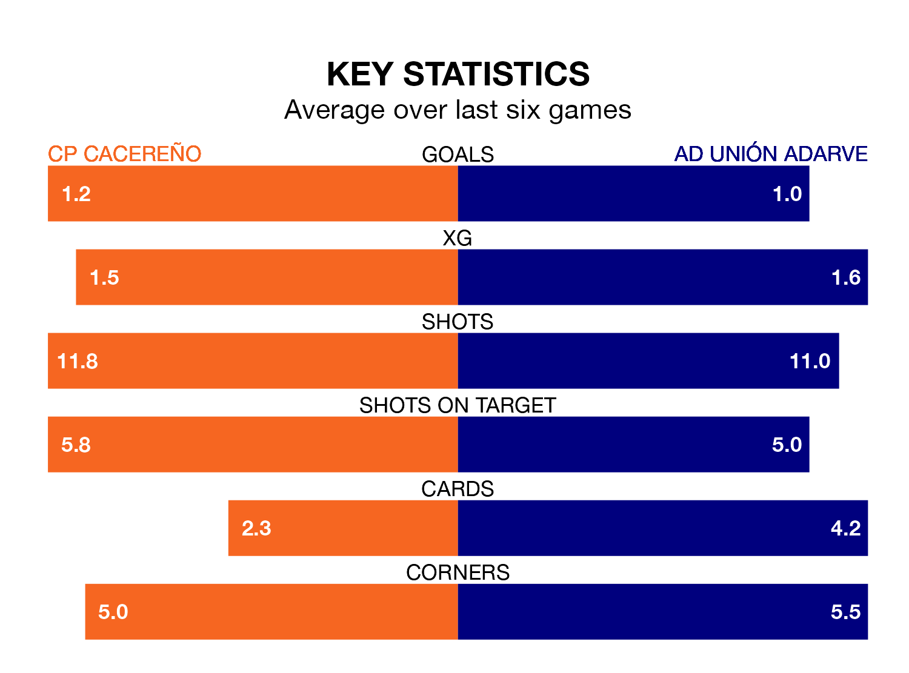

CP Cacereño face AD Unión Adarve at the Estadio Príncipe Felipe on Sunday looking to secure a first win in five Segunda División RFEF Group 5 games.
CP Cacereño have lost one and drawn three matches since they last earned three points – against CDA Navalcarnero on January 14.
They face an Unión Adarve side who have won two and drawn one over that time.
With 29 goals in 22 games so far this season, Unión Adarve are scoring more than average in the league with 1.3 goals per game. But they are conceding more than average too, letting in 29 goals at a rate of 1.3 per game.
CP Cacereño, meanwhile, are average scorers, with 1.1 goals per game. They have conceded 1.3 goals per game.
In the last three years, CP Cacereño and Unión Adarve have played each other on three occasions. Unión Adarve won one of them and they drew the other.
Their last meeting was on October 8, when they played out a 2-2 draw.
The home side are 11th in the table after 22 games, of which they have won six and drawn nine, earning 27 points.
The visitors are three places ahead of CP Cacereño in eighth, with eight wins and nine draws putting them on 33 points.
CP Cacereño's last match was on February 11, a 1-1 draw against SS Reyes.
Unión Adarve beat Talavera CF 1-0 last time out, also on February 11.
Updated: 13:30 (UTC), 12/02/24